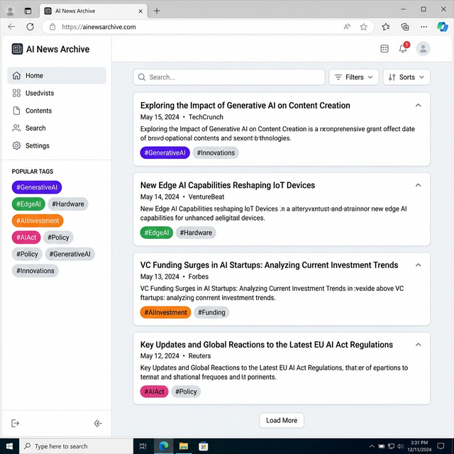
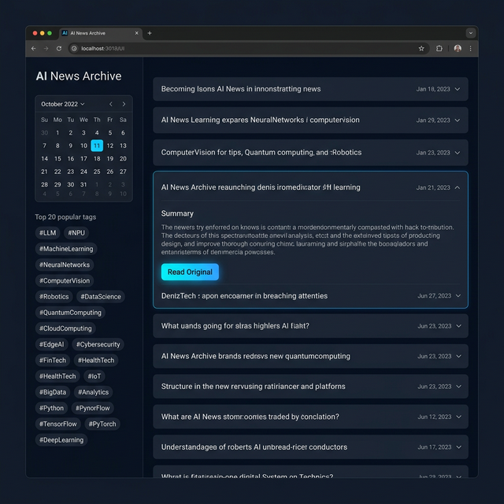
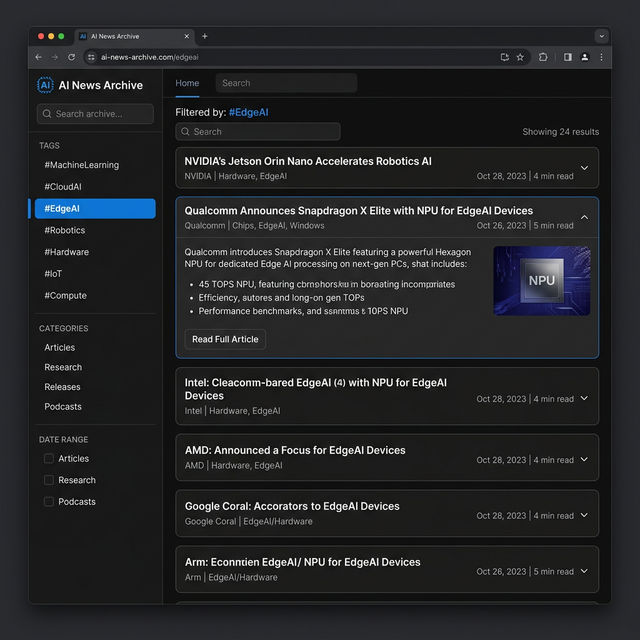
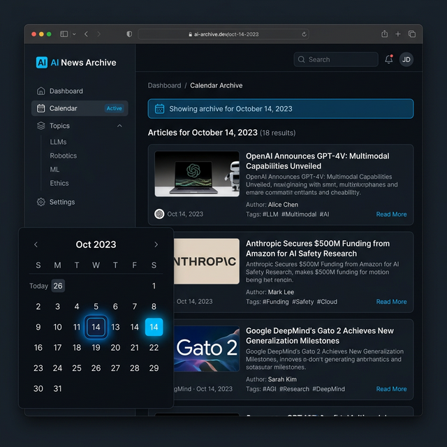

AI News Archive
💻 Desktop PC UI Scenarios Guide
🟢 PC 시나리오 1: 라이트/다크 테마 토글 및 넓은 리딩 뷰
출근 후 데스크탑 브라우저로 접속해, 사무실 환경에 맞는 라이트 테마(Light Theme)로 전환한 뒤 쾌적하게 기사를 스캐닝하는 업무 시작 플로우입니다.

Step 1. OS 환경에 맞춘 테마 확인 및 뷰잉
상단의 테마 토글 버튼을 활용해 눈이 편한 라이트 모드로 전환 후 넓은 너비의 아코디언 카드 스캐닝
🔵 PC 시나리오 2: 사이드바 필터를 활용한 딥다이브
오후 깊은 업무 집중 시간, 좌측 고정 사이드바(Sticky Sidebar)를 활용하여 특정 기술 주제에 대한 지난 동향 리포팅을 위한 탐색 플로우입니다.

Step 1. 좌측 사이드바 탐색
좌측의 '인기 태그 Top 20 / 칩스' 구역에서 눈에 띄는 기술 키워드(#EdgeAI 등) 클릭
➔

Step 2. 몰아보기 뷰 갱신
우측 결과만 선택된 태그의 기사들로 필터링되어 화면 이동 없이 연속적인 읽기 경험 제공
🟡 PC 시나리오 3: 캘린더 위젯 위를 활용한 과거 조회
과거의 특정 시점(예: 지난 목요일 주요 AI 발표일) 기록을 찾아보기 위해 데스크탑의 상시 캘린더 UI를 다루는 플로우입니다.

Step 1 & 2. 미니 캘린더 탐색 및 즉각적 결과 노출
사이드바 하단에 위치한 미니 달력 위젯에서 날짜(예: 14일)를 직접 클릭. 우측 메인 영역에 해당일 데이터 갱신.